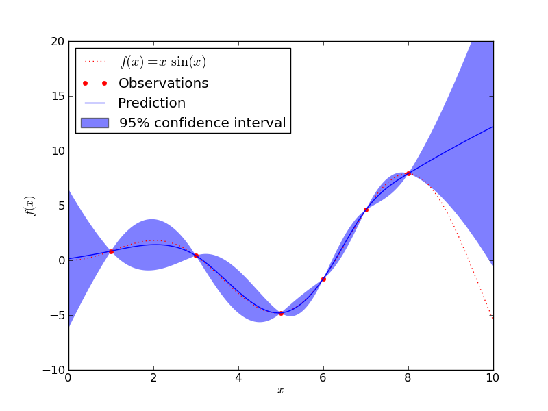

Gaussian Processes regression: basic introductory example¶
A simple one-dimensional regression exercise with a cubic correlation model whose parameters are estimated using the maximum likelihood principle.
The figure illustrates the interpolating property of the Gaussian Process model as well as its probabilistic nature in the form of a pointwise 95% confidence interval.
Python source code: plot_gp_regression.py
print __doc__
# Author: Vincent Dubourg <vincent.dubourg@gmail.com>
# License: BSD style
import numpy as np
from sklearn.gaussian_process import GaussianProcess
from matplotlib import pyplot as pl
def f(x):
"""The function to predict."""
return x * np.sin(x)
# The design of experiments
X = np.atleast_2d([1., 3., 5., 6., 7., 8.]).T
# Observations
y = f(X).ravel()
# Mesh the input space for evaluations of the real function, the prediction and
# its MSE
x = np.atleast_2d(np.linspace(0, 10, 1000)).T
# Instanciate a Gaussian Process model
gp = GaussianProcess(corr='cubic', theta0=1e-2, thetaL=1e-4, thetaU=1e-1, \
random_start=100)
# Fit to data using Maximum Likelihood Estimation of the parameters
gp.fit(X, y)
# Make the prediction on the meshed x-axis (ask for MSE as well)
y_pred, MSE = gp.predict(x, eval_MSE=True)
sigma = np.sqrt(MSE)
# Plot the function, the prediction and the 95% confidence interval based on
# the MSE
fig = pl.figure()
pl.plot(x, f(x), 'r:', label=u'$f(x) = x\,\sin(x)$')
pl.plot(X, y, 'r.', markersize=10, label=u'Observations')
pl.plot(x, y_pred, 'b-', label=u'Prediction')
pl.fill(np.concatenate([x, x[::-1]]), \
np.concatenate([y_pred - 1.9600 * sigma,
(y_pred + 1.9600 * sigma)[::-1]]), \
alpha=.5, fc='b', ec='None', label='95% confidence interval')
pl.xlabel('$x$')
pl.ylabel('$f(x)$')
pl.ylim(-10, 20)
pl.legend(loc='upper left')
pl.show()